git 教程
Git与Github
Git简要介绍
Git是目前世界上最先进的分布式版本控制系统。
什么是版本控制系统呢？
以平常工作为例，可能对于某一个项目，想删除一个段落，又怕将来想恢复找不回来怎么办？有办法，先把当前文件“另存为……”一个新的Word文件，再接着改，改到一定程度，再“另存为……”一个新文件，这样一直改下去。这样下去可能我们会关于一个项目有十几个版本。
过一段时间后，你想要找回被删除的内容，但是已经记不清删除前保存在哪个文件里了，只好一个一个文件去找。看着一堆乱七八糟的文件，想保留最新的一个，然后把其他的删掉，又怕哪天会用上，还不敢删。
更要命的是，有些部分需要你的财务同事帮助填写，于是你把文件Copy到U盘里给她（也可能通过Email发送一份给她），然后，你继续修改Word文件。一天后，同事再把Word文件传给你，此时，你必须想想，发给她之后到你收到她的文件期间，你作了哪些改动，得把你的改动和她的部分合并
于是你想，如果有一个软件，不但能自动帮我记录每次文件的改动，还可以让同事协作编辑，这样就不用自己管理一堆类似的文件了，也不需要把文件传来传去。如果想查看某次改动，只需要在软件里瞄一眼就可以，岂不是很方便？
这个软件的作用就是如此，记录一个文件的多个版本，且可以记录是谁记录的？是什么时候记录的？更改的内容是什么？等等。
这样，你就结束了手动管理多个“版本”的史前时代，进入到版本控制的20世纪。
安装Git
本文此处仅介绍windows版本的安装方法。
方法一：直接从Git官网下载安装程序，然后自行选择选项安装即可。
搜索Git - https://git-scm.com/ -> “Install for Windows”
点进后，显示如图页面，直接点击箭头处内容下载即可。默认选择默认安装路径即可，如若想更改路径，务必使用英文路径
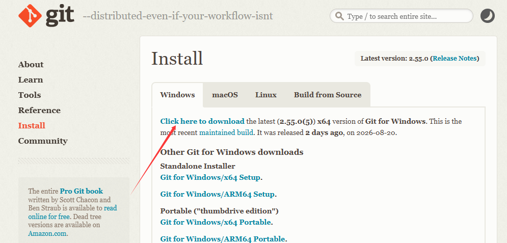
默认编辑器我们推荐选择VSCode：
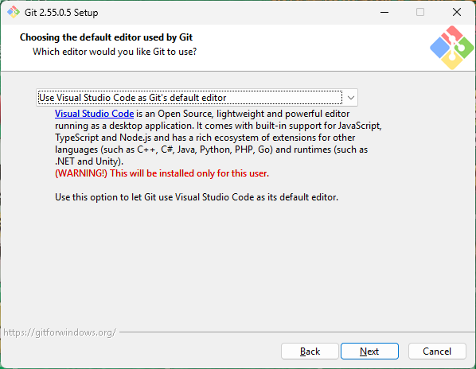
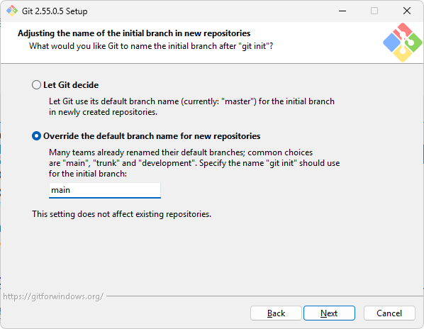
后续建议直接选择默认选项即可，如果想要知道其选项具体含义，可以前往以下网站：
一般来说，我们只要在开始菜单或者桌面找到Git Bash，点击后蹦出一个如图的命令行窗口，就可以说明Git安装成功了。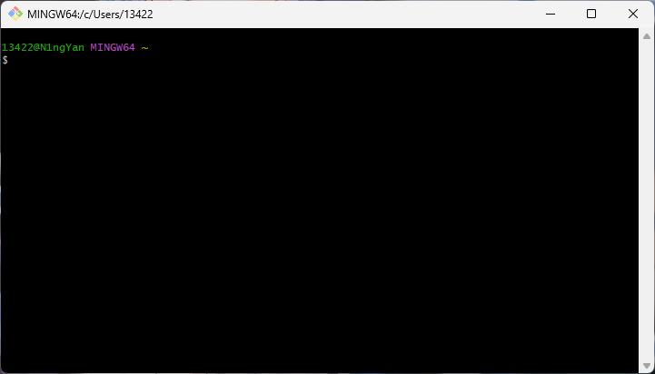
Github
我们先简单理解一下Github是什么，其作用是什么？
简单来说，GitHub 是一个专门用来存放、管理和分享代码的网站。你可以把它理解成“程序员的网盘 + 代码版本管理工具 + 开源社区”。
假如你在steam上玩过游戏这点就更好理解了，前面的git能够帮我们在本地存档，就好像你玩游戏的存档一样，记录了你存档的时候什么时间，有什么具体信息，做了什么。
而Github就是steam云状态，他把你退出游戏以后最后保存的那个存档存到云端上，这样就能保证，只要你账号是对的，在别的地方你也可以打开这个存档了。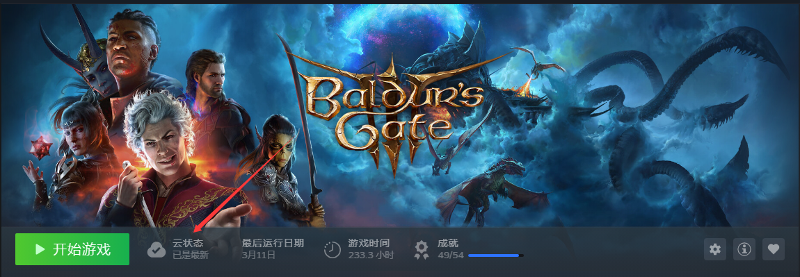
因此，我们需要一个Github账号，将其与我们的Git绑定，这样我们就可以进行我们项目上传了。
首先先进入Github，如果进不去，可以使用Watt toolkit这类软件，如果有更好的就更好了，这边就不做推荐了:)
然后自己进行注册即可。下图就是已经注册成功，你可以自己改动一些个性化内容：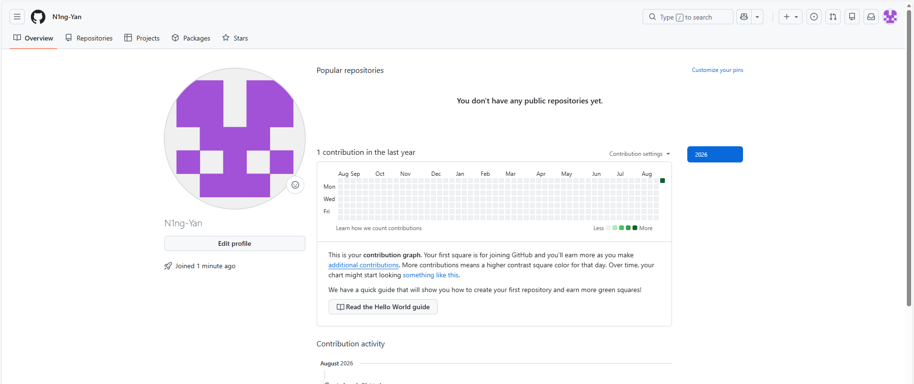
配置Git
我们安装完Git的第一步，就是给我们记录一个名字和Email地址：
git config --global user.name "Your Name"
git config --global user.email "email@example.com"其中的名字和邮箱按理说可以随意取，但是如果你想关联到自己的Github账号的话，将邮箱与Github的邮箱保持一致。
且后面想要查看自己的信息，可以使用:
git config --global --list后面想要更改名字与邮箱再设置一次即可，但是修改后只影响未来的新commit。以前已经提交的 commit 里的作者信息不会自动改变。
注意git config命令的--global参数，用了这个参数，表示你这台机器上所有的Git仓库都会使用这个配置，当然也可以对某个仓库指定不同的用户名和Email地址。只要进入对应文件夹，使用前面的设置代码即可。
本地创建版本库
什么是版本库呢？版本库又名仓库（Repository），你可以简单理解成一个目录，这个目录里面的所有文件都可以被Git管理起来，每个文件的修改、删除，Git都能跟踪，以便任何时刻都可以追踪历史，或者在将来某个时刻可以“还原”。
- 创建空目录
先选择一个合适的地方，创建一个空目录，可以手动建立，也可以进入某个目标文件夹使用mkdir xxxx
然后使用cd xxxx进入我们新建的文件夹。
可以使用pwd,显示当前目录。
- 把目录变成Git可以管理的仓库
我们可以通过git init来执行这个事情,输入即可,可能输出如下：
$ git init
Initialized empty Git repository in /Users/michael/xxxx/.git/瞬间Git就把仓库建好了，而且告诉你是一个空的仓库（empty Git repository），细心的读者可以发现当前目录下多了一个.git的目录，这个目录是Git来跟踪管理版本库的，没事千万不要手动修改这个目录里面的文件，不然改乱了，就把Git仓库给破坏了。
如果你没有看到.git目录，那是因为这个目录默认是隐藏的，用ls -ah命令就可以看见。
git init：
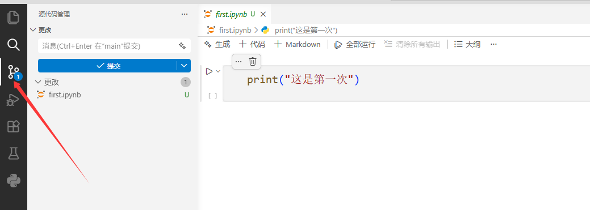
这边我们已经初始化过了，就不演示了，现在的界面是已经初始化过后的情况。
把文件添加到版本库
版本控制系统可以告诉你每次的改动，比如在第5行加了一个单词“Linux”，在第8行删了一个单词“Windows”。而图片、视频这些二进制文件，虽然也能由版本控制系统管理，但没法跟踪文件的变化，只能把二进制文件每次改动串起来，也就是只知道图片从100KB改成了120KB，但到底改了啥，版本控制系统不知道，也没法知道。
不幸的是，Microsoft的Word格式是二进制格式，因此，版本控制系统是没法跟踪Word文件的改动的，前面我们举的例子只是为了演示，如果要真正使用版本控制系统，就要以纯文本方式编写文件。
因为文本是有编码的，比如中文有常用的GBK编码，日文有Shift_JIS编码，如果没有历史遗留问题，强烈建议使用标准的UTF-8编码，所有语言使用同一种编码，既没有冲突，又被所有平台所支持。
使用Windows的童鞋要特别注意：千万不要使用Windows自带的记事本编辑任何文本文件。原因是Microsoft开发记事本的团队使用了一个非常弱智的行为来保存UTF-8编码的文件，他们自作聪明地在每个文件开头添加了0xefbbbf（十六进制）的字符，你会遇到很多不可思议的问题，比如，网页第一行可能会显示一个“?”，明明正确的程序一编译就报语法错误，等等，都是由记事本的弱智行为带来的。建议你下载Visual Studio Code代替记事本，不但功能强大，而且免费！
现在，我们可以编写一个readme.txt文件，内容随意。
一定要放到learngit目录下（子目录也行），因为这是一个Git仓库，放到其他地方Git再厉害也找不到这个文件。
和把大象放到冰箱需要3步相比，把一个文件放到Git仓库只需要两步。
第一步，用命令git add告诉Git，把文件添加到仓库:
$ git add readme.txt执行上面的命令，没有任何显示，这就对了，Unix的哲学是“没有消息就是好消息”，说明添加成功。
第二步，用命令git commit告诉Git，把文件提交到仓库：
$ git commit -m "wrote a readme file"
[master (root-commit) eaadf4e] wrote a readme file
1 file changed, 2 insertions(+)
create mode 100644 readme.txt简单解释一下git commit命令，-m后面输入的是本次提交的说明，可以输入任意内容，当然最好是有意义的，这样你就能从历史记录里方便地找到改动记录。
嫌麻烦不想输入-m “xxx”行不行？确实有办法可以这么干，但是强烈不建议你这么干，因为输入说明对自己对别人阅读都很重要。实在不想输入说明的童鞋请自行Google，我不告诉你这个参数。
git commit命令执行成功后会告诉你，1 file changed：1个文件被改动（我们新添加的readme.txt文件）；2 insertions：插入了两行内容（readme.txt有两行内容）。
如果嫌麻烦，可以直接使用git add .，这样就不用考虑暂存哪个文件了。
当然，前面都是使用终端的指令，我们现在讲一下如何用VScode执行这些操作：
如图打开对应界面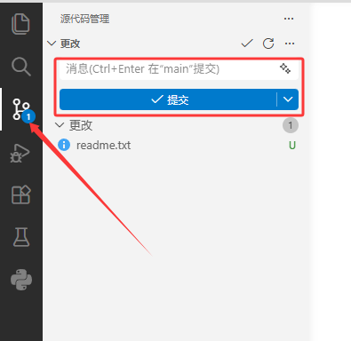
git add 与git commit这两个指令了， 红色方框内可输入的位置，即本次提交的说明，与前文一致。 成功后如下图所示：
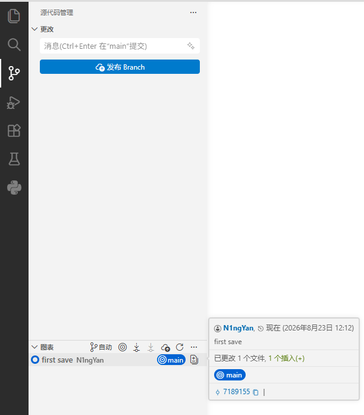
就可以显示改动的时间，人，以及备注等内容
如果我们随便增加一些内容，再次commit后，我们点击第二次的save内容，我们可以看到此次更改的内容：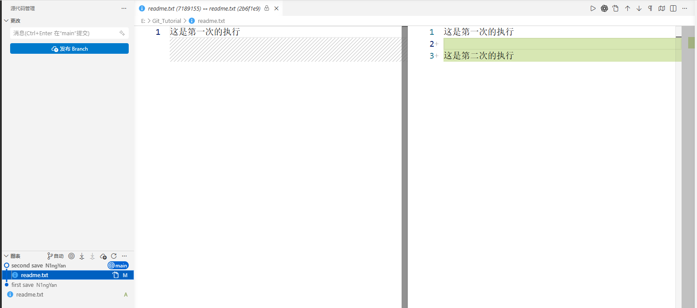
可以自行尝试，多试几次就明白啦:)
github远程提交
此处，我们可以先在github上创建一个新的项目：

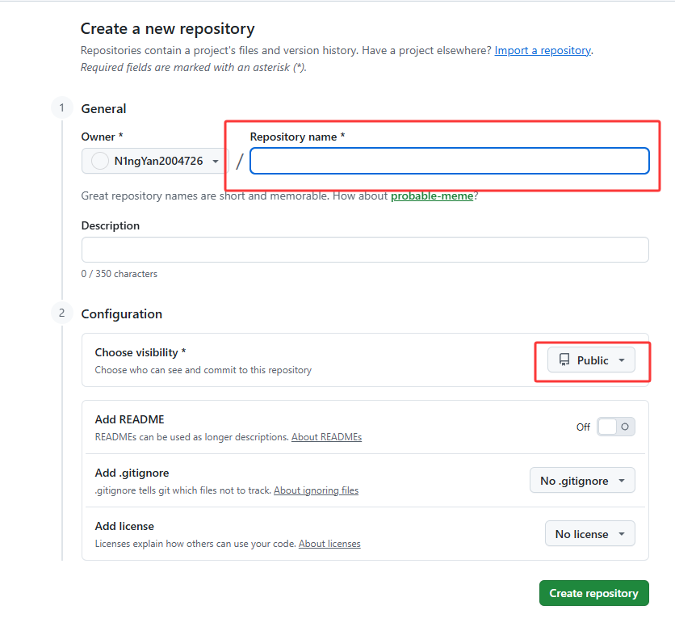
红框处可以设置自己的项目名称与是否可见。
如图就是创建好的：